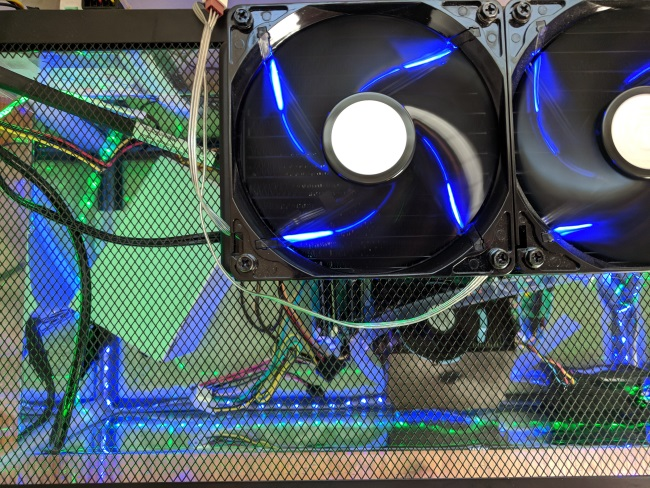
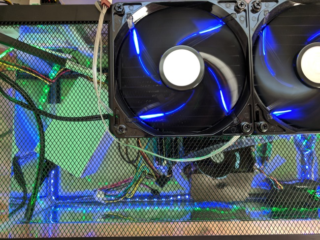
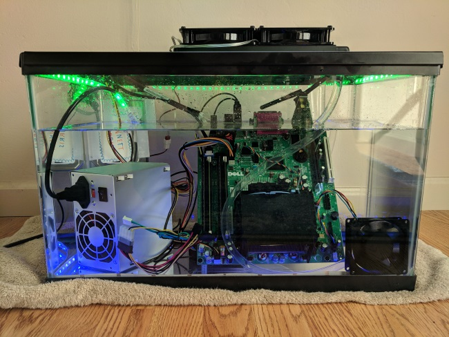
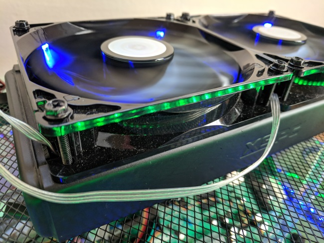
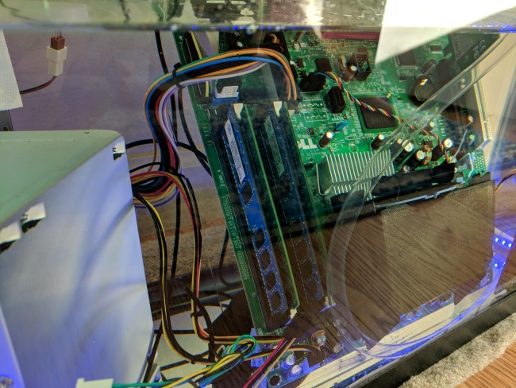
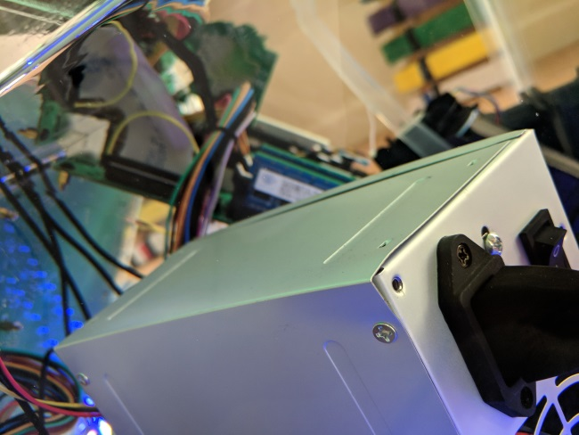
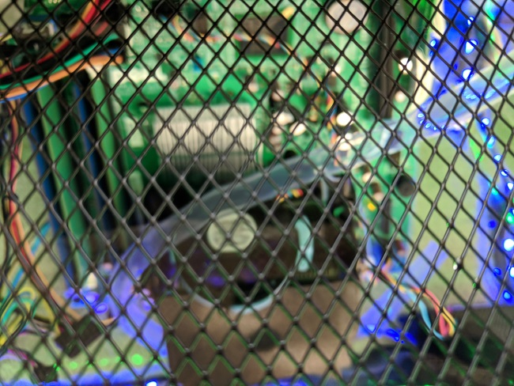

Mineral Oil Computer
The mineral oil pc is one of my favorite projects, and also one of the most expensive. It took an immense amount of time and effort looking for a suitable and cheap tank, finding the water cooling hardware, and doing just plain old research to make sure everything would fit. But in the end, the result was more than worth the time and money spent.
Journey
After watching a cool Linus Tech Tips video, I was inspired to make my own mineral oil cooled pc, but with a special twist -- mine would be made from only free, used computer hardware. I had no idea what kind of things this would entail. I barely even understood the science behind such a machine. So I did a lot of research.
Once I had the idea, I put out an ad to the neighborhood to see if there was anyone willing to give a way some old, free computer hardware. Someone was nice enough to give me two identical Dell SFF Optiplex 760s. These things were old, like possibly older than myself and the guy who gave them to me said one was broken. I planned to use the broken one for testing and sizing, and set up the working one with the proper software so it would be ready for mineral oil. (cad photo?) The original plan was to build a case from acrylic plastic that would just fit the board. That way I could minimize the amount of expensive mineral oil needed. After looking at costs for a custom acrylic box that could have the strength to hold a water tight seal, it became clear that buying extra mineral oil for a larger fish tank would be a better option. I looked through a lot of fish tanks before settling on the cheapest one I could find: a $20 ten gallon fish tank from petco. After I had the tank, I began searching for water cooling hardware. I settled on this copper radiator and this pump.
Once I had all the parts, I mounted the motherboard and heatsink to a sheet of acrylic with motherboard standoffs. Next, I put the power supply and motherboard in the tank since putting in the power supply would fill up the large tank a little better. Then I began to pour all 7 gallons of mineral oil I had bought. I turned it on and everything worked just as it had during my testing.
Pictures
    Conclusion
This project was a perfect case of the saying “easier said than done.” There were many problems I encountered along the journey and my final product looked a world away from what I had planned. But now that it’s over, I couldn’t be happier with my result. And although I would never do it myself, I also really respect the people who decide to make a mineral oil cooled machine with expensive hardware.